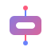

The Solution
Bridging the Gap Between Users and Actionable Insights
AxWise transforms raw user interviews into actionable development tasks, eliminating the costly gap between customer feedback and product decisions.
Transforming Conversations into Actionable Product Insights
User Pain Points
Feature Requests
Behavioral Patterns
Usability Issues
Workflow Blockers
Mental Models
+Many More
All extracted automatically from a single 45-minute user interview — delivering 10x ROI on research time.
Advanced AI
Proprietary NLP models extract actionable insights from unstructured conversations with 85% accuracy.

Intuitive UI
Zero learning curve for non-researchers, reducing time-to-insight by 70% compared to traditional methods.

API-First
Seamless integration with development workflows (Jira, Miro, GitHub) for direct insight-to-action conversion.